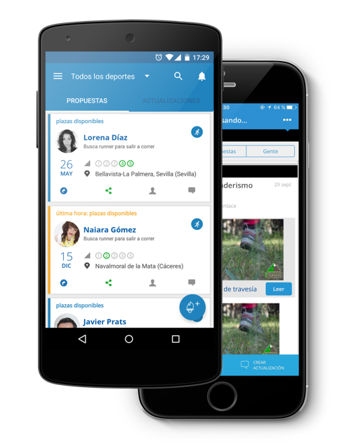

Home
Francisco Caro Diaz
desarrollador iOs, Android y Web.
Ingeniero Informático con cinco años de experiencia en desarrollo web y más de dos años en tecnología móvil. Un auto-aprendiz amante del desarrollo móvil y buscador de nuevos retos.
Me apasiona el mundo de la movilidad y cada día mi interés es mayor, y por ello intento aprender y renovar mis conocimientos día a día. Intento orientar mi carrera profesional sobre proyectos relacionados tanto Android, iOs como tecnologías móviles de desarrollo híbrido ya que siempre he sentido pasión por ello, además porque creo que no es nuestro futuro si no nuestro presente.
Habilidades desarrolladas:
Análisis, desarrollo y diseño tanto para iOs como Android.
Alto nivel de responsabilidad, de organización, de planificación y de supervisión.
Capacidad de comunicación y de escucha
Perseverancia y constancia en los objetivos, tanto a nivel individual como en equipo.
Metodología ágil para la obtención de resultados a corto , medio y largo plazo y de calidad
Capacidad analítica para la toma de decisiones.
Espíritu emprendedor, fomentando la creatividad y la iniciativa.
Capacidad de motivación, organización y planificación.
Trabajo en equipo y liderazgo.
Flexibilidad, movilidad. Abierto a otras culturas y al uso de nuevas tecnologías..
Proyectos recientes
Orquest
Responsable del desarrollo de la nueva versión para iOs y Android de la aplicación móvil de Orquest. Realicé el trabajo de varios perfiles estuve encargado de diferentes tareas: análisis, desarrollo, testing y publicación en el market. Proyecto desarrollado con uso de la arquitectura MVVM usando como lenguajes Kotlin y Swift. Responsable técnico en el inicio y desarrollo del proyecto móvil partiendo de una versión previa desarrollada con framework híbrido Ionic, enfocado en cómo mejorar la usabilidad y experiencia de usuario respecto a la antigua aplicación y mejorar con nuevas funcionalidades con la mejor calidad para ambas plataformas.
SDOS
Responsable técnico desarrollo proyectos con tecnología iOs y Android. Lider técnico en la entrega y desarrollo plataforma móvil de la aplicación DIA. Responsable en la aplicación móvil de las mejores prácticas de análisis, codificación, testing y entregables. Participante activo en proyectos con metodología ágil Scrum. Participo también en la definición de parte servidor y servicios web para dar un mejor rendimiento al producto. Participo al igual en el análisis, estimaciones y desarrollo de proyectos propios y de terceros. Mentor de los equipos iOs y Android en orden de asegurar el continuo desarrollo del equipo en las mejores técnicas a implementar, encargado del continuo crecimiento técnico del equipo.

Auroralabs
Responsable desarrollo de nuevos proyectos de Android y iOS y también a cargo de mantener y evolucionar aplicaciones de proveedores. Continuamente centrado en cómo mejorar la usabilidad y la experiencia del producto móvil y mantener la mejor estructura del código fuente para aprovechar las nuevas características y desarrollos con la mejor calidad. .

Freelance
Participación en varios proyectos realizados con tecnología Android y iOs
Contacto
Por favor, no dude en ponerse en contacto conmigo si necesita más información sobre mi, sobre mi experiencia o proyectos en los que he participado.
{kind=link}
{kind=link}
{kind=link}